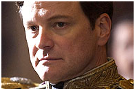

Speech defect treatment fit for a king
Patricia Edgar
January 8, 2011
The suffering of those who can't speak freely is made worse by poor diagnosis.
THE King's Speech, the acclaimed film starring Colin Firth and Geoffrey Rush, is a brilliant case study of a man with a speech defect who is helped to overcome his lifelong trauma. The film deserves attention not only because of its artistic merits, but because it depicts, in compelling terms, a disability that receives little attention; the suffering experienced by those who cannot speak freely.
Speech pathology is a complex medical discipline in which misdiagnosis and mistreatment are common. For those with speech impediments, speaking is a nightmare, engaging in social conversation near impossible, and interviewing for a job a humiliation. Sir Keith Murdoch was a stutterer and as a boy would buy his train ticket by pushing a note across to the ticket seller.
The film brings this problem to life, dramatising the problems of the Duke of York, who is to become King George VI.
Lionel Logue, an Australian drama teacher and elocutionist with no medical training, but with the chutzpah to set himself up in London's Harley Street, is recruited to help him. Logue has belief in himself and his experimental methods, which the experts of the day had no knowledge of, and he convinces the Duke to trust him. He knows the only way to success is through a partnership and dogged, hard, consistent work by the Duke himself if there is to be any chance of success. Logue has been given the challenge of a lifetime and an opportunity to prove his methods with a man whose recovery is important for a nation.
Speech therapy was in its infancy in the 1930s. The theories of Freud, who died in 1939, dominated thinking about the brain and behaviour. Stammers were considered to be psychological, not physical. Speech experts jumped on the notion that psychological problems were the cause. When the impediment becomes the patient's fault, the doctor is off the hook; misdiagnosis, mistreatment and suffering follow.
It was not until the mid 20th-century that speech phonation was understood. We now know anxiety makes a stammer worse, alcohol helps make it better. Physical and psychological knowledge is required to diagnose and treat speech problems.
One per cent of adult populations are stutterers. Refereed journals list up to 28 causes of stuttering and there are many other speech disorders that also involve the function of the larynx.
I lost my voice in 1976. After two years of mismanagement, I was the first Australian to be diagnosed with spasmodic dysphonia (SD), a crippling speech disorder.
Soon after, a speech clinic was established at St Vincent's Hospital in Sydney, where a distinguished doctor had come down with the same problem. In the past 20 years, a revolutionary treatment has been available which allows ease in speaking. The ''cure'' is an injection into the vocal chords of a deadly poison, botulinum toxin, which most people know as a cosmetic treatment for wrinkles.
Botox stops the involuntary spasm in the vocal chords that characterises SD. But its effect is temporary and must be repeated every few months. For some, Botox produces such relief they can't stop talking for days.
In
an effort to understand SD better, Don Edgar and I undertook a study of the 133
known patients in support groups in Melbourne and Sydney in 1995.
(See Spasmodic Dysphonia in pdf format (312KB))
The impact on their lives from the disability was found universally to be one of serious social dysfunction and depression with a negative impact on their work and family life. Only 10.5 per cent were correctly diagnosed by their doctors; for the others, diagnosis was a long, frustrating process.
Speech therapy lacks status in the medical profession and in the wider community and is under-resourced. It is claimed on Wikipedia that up to 90 per cent of people have some form of speech dysfunction, but speech issues are given little consideration by the education system. Medically, the treatment a patient receives depends very much on the luck of the draw.
Logue was successful because he removed all sense of self-blame from the Duke's mind. He corrected the physical problem - the Duke's breathing - and helped him to relax using a variety of techniques. Logue adopted a psycho-social approach in an era when behaviourism was believed to be the only way to go. With his experimental techniques and no medical training, Logue was an innovative pioneer in speech diagnosis and treatment.
Still today, the speech diagnosticians often get things wrong and the resulting suffering is acute. Botox has made a dramatic difference for some and 20 years of Botox in 2011 is a date to celebrate for those with SD.
The King's Speech is a case study that should be seen in all the speech departments across the continents. It is important for doctors to be reminded, and sufferers to know, they are most likely dealing with a physiologically based medical problem, not a psychologically caused weakness. You don't have to be a king to suffer the torments of hell when you can't speak, but it takes a king for a story about a stammerer to warrant attention.
Patricia Edgar was the founding director of the Australian Children's Television Foundation. Like the Duke of York, she eventually found a brilliant speech pathologist who helped her manage her voice disorder.